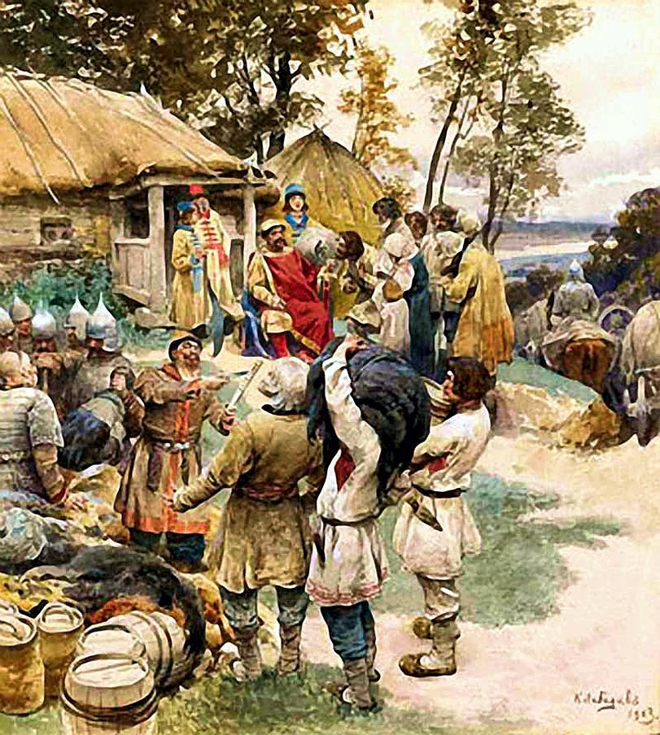
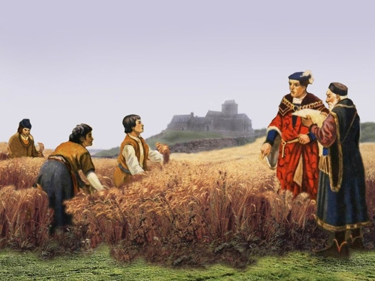
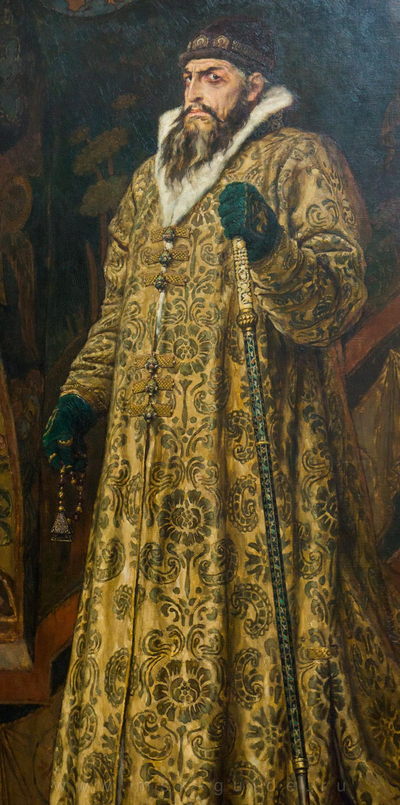
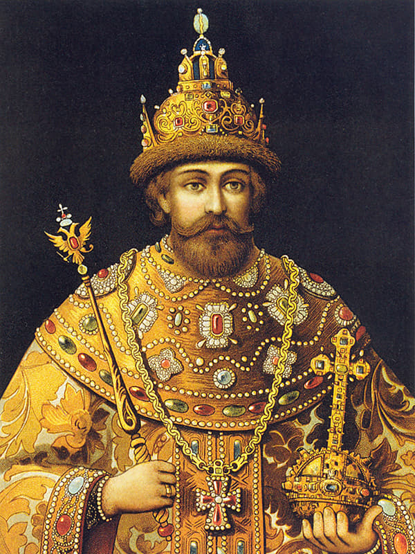

Налоги в Древнерусском государстве
В эпоху Древнерусского государства основным источником доходов казны была дань, которая представляла собой прямой налог (подать), собираемый с населения.

Первые упоминания о взимании дани относятся к эпохе князя Oлeга(? — 912гг.). Древние летописи именуют «данью» военную контрибуцию, которую славянские племена платили варягам - на севере, хазарам - на юге.
По мере роста и усиления Киевского феодального государства дань перестала быть контрибуцией и превратилась в подать, которая распределялась на содержание великокняжеского двора, органов управления, дружины, военные нужды.
Дань взималась двумя способами: повозом, когда она привозилась в Киев, и полюдьем, когда князья или княжеские дружины сами ездили за ней. Одна из таких поездок к древлянам печально закончилась для князя Игоря.
Дань платили предметами потребления (мехами) или деньгами.
Единицей обложения данью в Киевской Руси был «дым», определявшийся количеством печей и труб в каждом домохозяйстве, рало или плуг.
В XIII в. дань взималась в пользу ханов Золотой Орды (выход ордынский), платили ее князья, начиная с Ярослава Всеволодовича (1191—1246), более 200 лет. В 1257 г. для сбора дани татарскими численниками были проведены первые переписи населения (Суздальской, Рязанской, Муромской, Новгородских земель). Выход взимался баскаками - уполномоченными чиновниками ханов, собиравшими натуральные и денежные повинности с покоренных земель с каждой души мужского пола и со скота.
В XIV—XV вв. помимо ордынской дани со свободного населения взималась дань, которая направлялась прямо в княжескую казну — в виде натуральных сборов.
При Иоанне III (1440—1505) в 1480 г. уплата выхода была прекращена. Хотя в договорных и духовных грамотах и после 1480 г. встречаются упоминания о выходе ордынском, но эти средства шли на содержание татарских царевичей, живших в России. Иоанн III закрепил исключительное право казны перерабатывать хмель, варить мед и пиво — медовая дань. В XV—XVI вв. существовала пошлина за право продажи алкогольных напитков — явка.
К XIV в. в московском государстве сложилась система кормлений — предоставление права на управление определенной территорией за службу великому князю. Формально полномочия кормленщика ограничивались уставными грамотами. Кормленщик назначал своих слуг сборщиками пошлин (пошлинники) и прямых налогов (тиуны). Кормленщик получал доходный список, а населению предоставлялось право челобитья на злоупотребления наместников.
Основным косвенным налогом была дорожная пошлина в виде мыта (на перевозимые товары), годовщины (с торговых людей), мостовщины и перевоза (на людей и товары). В период феодальной раздробленности (XIII-XIV в.) постепенно распространялись судебные, торговые и другие пошлины. Гостиная пошлина касалась права иметь склады, торговая пошлина - право устраивать рынки. Судебные пошлины взимались за убийство и прочие преступления.
Оброк
Оброк - один из видов феодальной ренты в XII - XIII в., уплачиваемый зависимыми крестьянами феодалам. Под оброком понималась аренда, т.е. срочное или бессрочное пользование каким-либо имуществом, вытекающее из договора найма. В аренду “на оброк” в XVI в. отдавались целые деревни с живущими в них крестьянами, причем арендатор обязывался уплачивать определенную сумму оброка и принимал на себя платеж всех государственных податей и повинностей.

В XV - XVI вв. натуральный оброк постепенно заменяется на денежный, на котором находились государственные, удельные и экономические крестьяне. Оброк взимался не только с доходов от земли, но и от торгово-промысловых занятий.
Натуральному оброку соответствовала система натуральных повинностей, которые представляли собой возлагаемые государством на население обязанности выполнять определенные работы и предоставлять личное имущество в распоряжение госуд.власти. Население привлекалось к содержанию двора, армии, к участию в строительстве дорог личным трудом и транспортными средствами.
Подати и сборы в XVI-XVII вв.

Во второй половине XVI в. многие налоги и сборы стали взиматься в денежной форме.
Полоняничные деньги - разновидность налога, взимавшегося для выкупа полоняников - захваченных в плен татарами и турками, совершавшими набеги на южные территории. Полоняничный приказ ведал сбором полоняничных денег, на нем лежала обязанность дальнейшего устройства возвращения на родину полоняников. В 1679 г. полоняничные деньги вошли в состав стрелецких денег - налогов на содержание стрелецкого войска.
1555 г. - при Иване IV Грозном установился сбор четвертовых денег - подати, взимавшейся на содержание должностных лиц.
Их сбором занимались чети - государственные учреждения, ведавшее финансами и административно-судебными делами тяглого населения отдельных территорий государства.
При правлении Ивана Грозного впервые упоминалось о взимании акциза с мяса - в 1574 г. взималась пошлина при убое скота.
К эпохе царствования Иоанна Грозного относится появление одного из древнейших в русской истории проектов по совершенствованию налоговой системы, выдвинутых представителем передовой русской общественно-политической мысли середины XVI в. И.С. Пересветовым. В конце 1549 г. Пересветов подал царю Иоанну IV Малую и Большую челобитные, в которых изложил проект преобразования русского государства. Он требовал централизации доходов, чтобы «...со всего царства своего доходы себе в казну имати...», и предлагал ряд мер для обеспечения их роста: освободить людей, «которые у велмож царевых в неволе были», ликвидировать наместничество, кормление, упорядочить налоговую систему путем отделения функций судей от функций сборщиков налогов и провести ряд других реформ. Программа Пересветова по преобразованию системы доходов казны была нацелена на укрепление централизованного государства путем сосредоточения всей власти в руках государя и в полном объеме была реализована только в эпоху Петра I.

В период царствования Михаила Федоровича (1596—1645) взимание податей стало основываться на данных так называемых писцовых книг; служилых людей, живущих в посадах, обложили общим посадским тяглом (тягло — в русском государстве XV — начала XVIII в. денежные и натуральные государственные повинности крестьян и посадских людей; в XVIII—XIX вв. единица обложения крестьян повинностями в пользу помещиков).
Тяглом облагался не член общины, а определенная единица, округ, волость, как совокупность хозяйств. Физическое или юридическое лицо, подлежавшее тяглу, должно было владеть хозяйством, которое распадалось на главный центр и второстепенные части. Эти части тянули к центру и носили название тяглых. Отсюда тяглом стал называться объект налога, участок пашни, надел.
От тягла освобождала гражданская служба по назначению от правительства, военная служба, дворцовая, придворная и отчасти принадлежность к купеческому сословию. В состав тяглого населения Московской Руси XVII в. включались крестьянская община и посадская община.